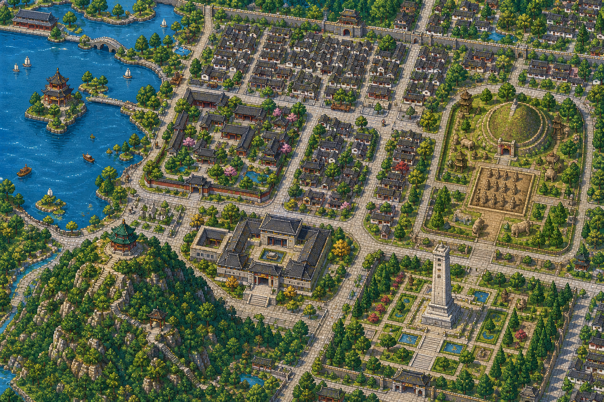

彭彭
你的彭城向导
你的彭城向导
欢迎来到彭城
你好，我是彭彭。
你好，我是彭彭。
先告诉我你叫什么？
我会陪你走进这张徐州像素地图，发现山水、老城与汉文化的故事。
彭彭的话

点击黄色地标；放大后可拖动地图查看细节。
我会陪你走进这张徐州像素地图，发现山水、老城与汉文化的故事。
路线只提供故事引导，不会限制你自由探索其他地点。
横屏可以看到更完整的徐州地图。进入后还可以使用右下角的“＋”放大，再用手指拖动查看细节。
这张徐州旅行票根按确认过的景点相对方位制作。可以下载保存，也可以回到地图继续逛。
本项目需要通过 HTTP 访问才能加载城市数据包。直接双击 index.html 打开会因浏览器安全限制而无法运行。
请在项目目录下运行：
python -m http.server 8080
然后访问 http://127.0.0.1:8080/